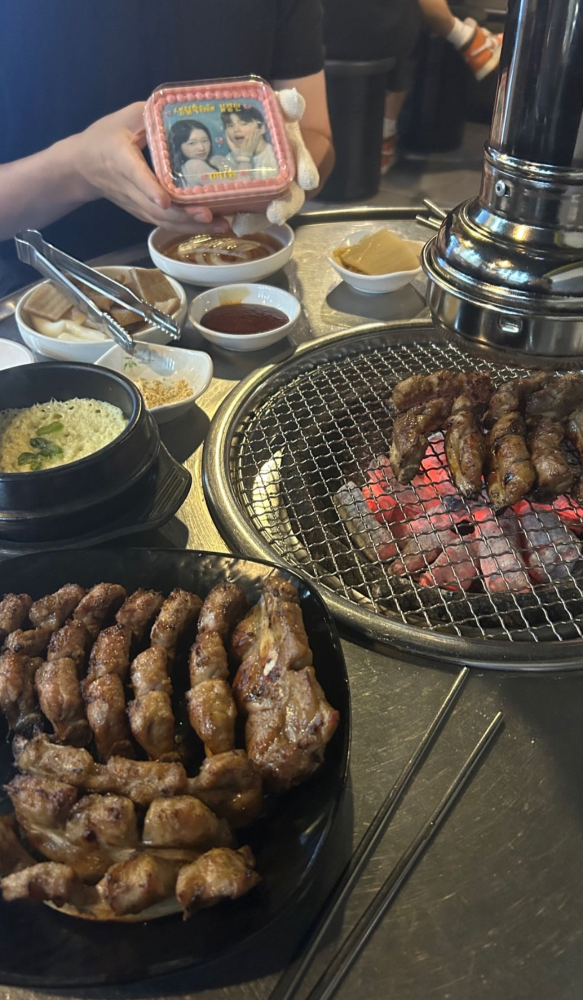
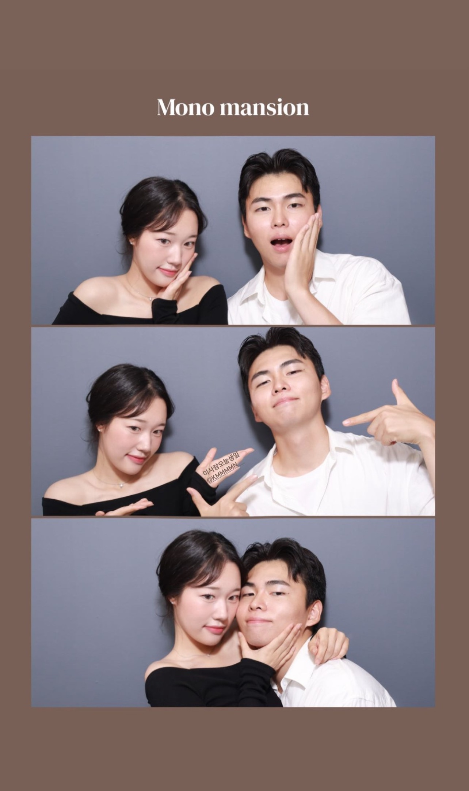
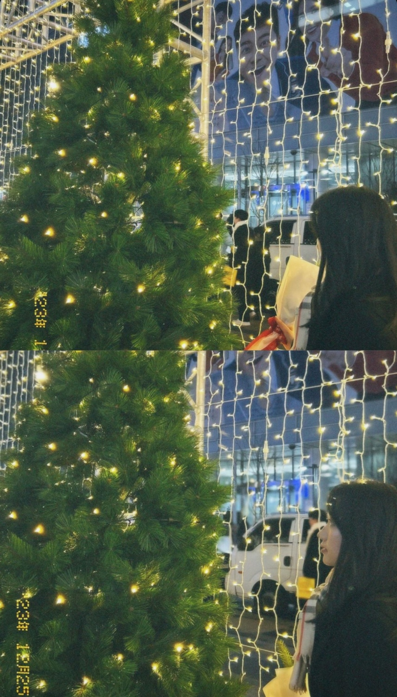

❤️유민이 생일 축하해❤️
2024.03.12
About us
-
유민
2004.03.12
시립대 행정학과 재학중
누구보다 기깔나게 20대를 즐기는 중
학교에서 안하는 게 없음
자봉, 기봉, 글봉, 새맞단, 학생회, 뱃민튼 let's go
삶의 낙: 꽤나 많음ㅋ
-
경민
1999.09.18
고려대 스마트보안학부 재학중
요즘 열심히 공부중
삶의 낙: 거의 김유민씨가 유일
우리의 timeline
-


내 생일이라고 이틀 연속으로 만나서 하고 싶은 대로 다 해줬던 날!
첫날엔 생일선물 언박싱하고 사진첩 같이 보고 사진 프린팅 된 케이크로 감동 받아주고 쪽갈비에 쐬주 갈겼다. 나를 위해서 너무 애써준 선물인게 티가 나서 너무 고마웠다ㅜㅜ 2주동안 노력해서 정성을 담아 맨날맨날 집에서 나 모르게 만들어줬다는 사실이 더욱 감동으로 다가왔다.
그러고 다음날에는 나랑 무서운 방탈출도 해주고(진짜 앞으로는 절대 안해줄 듯) 같이 열두시 카운트다운도 했다! 아마 저때가 병원 이슈가 있어서 잘 못 앉아있었던 때 였을걸..?
경민 생일 / 2023.09.18.
-

-
김유민씨 레전드 미모 갱신하신 올림픽공원 나들이 날
이 때 계획 없이 그냥 즉흥적으로 갔던 날인데 날씨도 너무 좋고 사진도 기가막히게 잘 나왔어서 아주 뿌듯했다ㅎㅎㅎ
사람 엄청 많았는데 최대한 안보이게 찍고 막 꽃밭 사이 들어가서도 찍고 간만에 사진만 막 갈겼던 날이었다
이러다가 사진에 맛들려서 열심히 찍어보고 싶어서 카메라도 고치고 해보았지만... 아주 금방 기각 당해 버려써ㅜ
올림픽공원 / 2023.09.24
-

-
처음으로 같이 롯데월드 놀러갔던 날!
드가기전에 아이스링크도 짧게 즐겨주고! 남들 대기 줄 기다릴 때 우리는 몰래 비밀 통로로 입장했다ㅋㅋ
각자 친구들한테 과잠 빌려서 갔지만 더워서 생각보다 많이 입을 일이 없었다! 그리고 중요한 건 과잠 없이 찍은 사진이 훠어얼씬 잘 나와버려서 과잠이 딱히 의미가 없어졌다!
놀이기구 한 3갠가..? 탔던 거 같은데 줄 서기 싫어하는 사람이랑 무서운 거 싫어하는 사람이 가니까 서로 안타도 돼서 오히려 재밌었당
우리한텐 기구가 아니라 먹부림이 메인이었기 때문에 오레오 츄러스를 찾으러 다닌 게 더 오려 걸렸던 것 같다
ps. 저 뽀뽀 막갈기는 사진도 롯데월드 날이더라구?
롯데월드 / 2023.10.07
-

-
한강에서 고기 구워 먹은 날!
여기 진짜 분위기도 너무 좋고 음식도 생각보다 알차게 나와서 꼭 다시 가고 싶은 곳이야ㅠㅠ 날씨 따뜻해지면 얼른 가자
고기 열심히 구워주고 등판 태평양 짤 하나 갱신해주고, 또 김유민씨 친구들이랑 실패했던 마시멜로 그냥 기가막히게 성공 시켜버리고
다 먹고 나서 노을 앞에서 한참 구경했는데 여기서 타임랩스가 날아갔었다... 내 폰에 문제가 있는 게 확실하다.. 그래두 이쁜 하트 구름 사진 건졌음!
한강 / 2023.10.09
-
은근히 신경 많이 쓰였던 빼빼로 데이!
이렇게 평범하지 않은 빼빼로 만드는 날이 올 줄은 정말 몰랐다
꽤나 이틀정도 소요된 나름 정성이 들어있는 작품이었다구
그렇게 열심히 만들고 나갔는데 김유민씨께서 계~속 안만들었다고 빌드업을 하시는겁니다.
진짜 설마 안만들었겠어 하고 계속 안믿으려고 하다가 정말 석이 나갈 즈음 빼빼로를 꺼내시는 겁니다.
세상 서운한 표정 지을라고 했는데 빼빼로 보니깐 또 기분이 좋아지더라구요.
빼빼로 데이 / 2023.11.11
-
저지르고 오셔가지고 같이 수습하러 참여했던 한강 마라톤!
무슨 바람이 드셔가지고 갑자기 신청을 한다 하셔가꼬 같이 참여하게 됐슴다. 그래두 추운 날씨에 뛰고 한강 구경하니까 기분은 좋더라구ㅎㅎ 나쁘지 않은 경험이어써
5키로 완주하고 메달 받아주고~ 사실 이 날은 달리기 끝나고 동네 가서 방이샤브 갈긴 게 메인이었음.
추운 날씨에 고생하고 먹는 샤브샤브.... 잊지 못해 정말..
한강 마라톤 / 2023.11.18
-
행복했던 1박2일 여수 여행!
도착하자마자 짐도 못 풀고 한정식 가서 막 갈겨주고 배도 안 꺼진 상태에서 바다김밥이랑 모찌랑 요상한 것들 다 먹어주고
결국 무리가 오셔서 배 타기 전까지 한시간정도 카페에서 휴식시간 가지다가 배를 타러 갔죵
배 타서 가만히 있는데 너무 아줌마 아저씨들만 많은 것 같아서 엥? 싶었다가 윗 층 올라가니까 우리가 이상한 곳에 있었던걸 깨달아버렸죵
불꽃놀이 열심히 봐주고 돌아오는 길에는 마술쇼도 감상해서 꽤나 알찬 두시간이었당. 다시 가라해도 갈 의향 있다!
배 내려서 인생네컷 찍으로 택시타고 바로 달려가서 레전드레전드 모노맨션을 찍어버리고 마는데!!! 이는 결국 케이크까지 이어지게 된다는 소문이 있다.
사진 다 찍고 야식으로 먹을 떡볶이랑 술 사서 방에 가서 열심히 먹다가 세에상 만취해버리고ㅎㅎㅎ 기억이 안나버리고ㅎㅎㅎ 다음날에 여러 모함을 들어버리고ㅎㅎㅎ
다음날에 아쿠아리움까지 가고 정말 완벽했던 여행이어써ㅜㅜㅜ 손에 꼽을 만한 행복한 날이었어서 여수 계속 가자고 샤라웃 해준 유민이한테 너무 고마워ㅎㅎ
여수 여행 / 2023.11.24

-

우리가 처음으로 함께 한 크리스마스!
맨날 가자고 말만 했던 광화문 근처를 여러번의 시도 끝에 결국 가게 됐다! 이전에 김치찜 먹으러 갈 뻔 했을 땐 핸드폰을 오는 길에 두고 오셔서 빠꾸했던 적이 있네용
같이 밥 먹구 살면서 처음으로 장미꽃도 선물 해주고(뿌듯) 광화문 광장 가서 사람 구경도 해주고 청계천 트리에서 사진도 찍어주고 대망의 스탠딩 코미디를 보러 갔당
두시간동안 웃느라 목이 아파질 정도로 너무 재밌었어서 나중에 쿨 돌면 나랑 한번 더 가죠야한다. 공연 보면서 몰래 케이크 먹는 거 까지 너무 재밌었당
우리의 크리스마스가 알차고 행복한 순간으로 가득해서 너무 좋았다! 올해에도 말도 안되는 코스를 짜봐야겠당
크리스마스 / 2023.12.25
-
새해를 장식해 준 강릉 여행!
해돋이도 볼 겸 같이 요리도 해 먹을 겸 강릉 펜션으로 여행을 떠났다. 아니나 다를까 도착하자마자 비가 억쑤로 쏟아져서 짐 들고 장 보는 데 굉장한 고생이 있었다.
산 넘고 강 건너서 결국 숙소에 도착했고, 우리 둘은 뻗어서 한참을 쉬다가 저녁을 준비하기 시작했다.
근데 저녁 메뉴가 또 쉽지 않은 친구들이어서 준비하는 데에만 두시간이 넘게 걸렸다!
그래두 결과물이 잘 나와주고 아침 댓바람부터 웨이팅해서 사온 케이크와 함께 화룡정점을 찍어줘서 결국엔 만족으러운 저녁상을 만들어냈다ㅎㅎㅎ
다음날에도 날씨가 흐려서 새해 해돋이는 결국 보지 못했지만 같이 새해 타종 행사 방송도 보고 올해의 버킷리스트 편지도 서로 써주면서 새해 느낌 물씬 느낄 수 있었따!
세시간 기다린 흑임자 커피와....^^ 기다리는동안 찍었던 셀프 아닌 셀프 사진관도 좋았다!(여기는 서울에 있으면 진짜 자주 갈 듯)
강릉 여행 / 2023.12.25
-
To. 유민
작년 내 생일 때 사진첩을 만들어 줘서 나는 어떤 걸 해 줄 수 있을까 고민하다가 요런 사이트 한 번 만들어 봤는데 어때~~? 손 편지는 최근에 자주 쓰기도 했고, 내 개성을 살릴 수 있는 걸 생각하다가 결정해써ㅎㅎ 사진 쭉 정리하면서 보니까 그동안 했던 일들 기억도 새록새록 나고 까먹고 있던 디테일도 하나둘씩 생각나서 쓰는 맛도 나름 재미가 있네. 그리고 요즘 공부하다 보니까 같이 놀러다니는 빈도수가 확 줄어드는 것도 정리하다가 체감이 되네ㅠ 하고 싶은 거, 가고 싶은 곳 많을텐데 유민이가 나 생각해서 티도 안내고 기다려주는 거 생각하면 너무 미안하다는 생각이 들어. 공부하는 사람 옆에서 응원해 주는 것도 은근히 힘든 일인데 계속 묵묵히 내 옆을 지켜줘서 항상 고마워 정말로. 이제 개강도 했고 진짜진짜 얼마 안남았으니까 조금만 더 기다려주면 내가 세상에서 제일 꿀잼인 남친으로 돌변해서 세상 하고싶은 거 다 해줄게! 4월 되면 벚꽃 놀이랑 피크닉도 가고, 시험 기간 되면 주말에는 동네에서 같이 공부하고 평일에는 시립대 도서관에서 공부도 하고 생각보다 엄청 자주 만날 수 있어~ 그니까 나 보고싶은 날에는 참지말고 꼭 소리질러야해. 그럼 내가 쏜살같이 달려가서 안아줄게.
우리 애기 스물한번 째 생일 너무너무 축하하고 여러 친구들한테서도 축하 많이 받겠지만 내가 가장가장 축하한다는 거 꼭 알고 있어야해! 작년에 이어서 나랑 생일을 두번이나 같이 보내줘서 너무 고맙고, 유민이라는 축하받을만 한 사람 옆에서 있게 해줘서도 너무 고마워. HBD 우리 애기!
From 경민